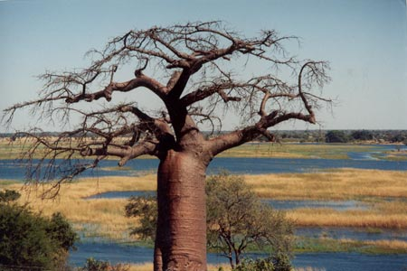
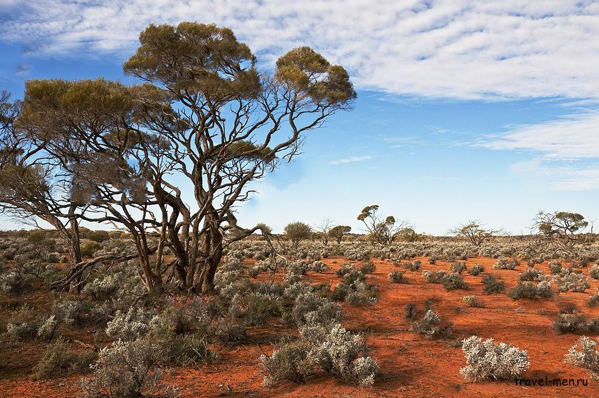
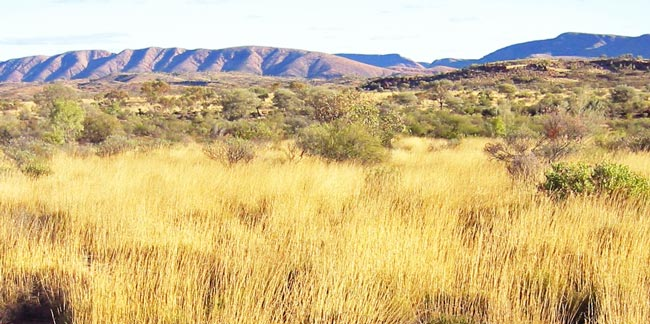
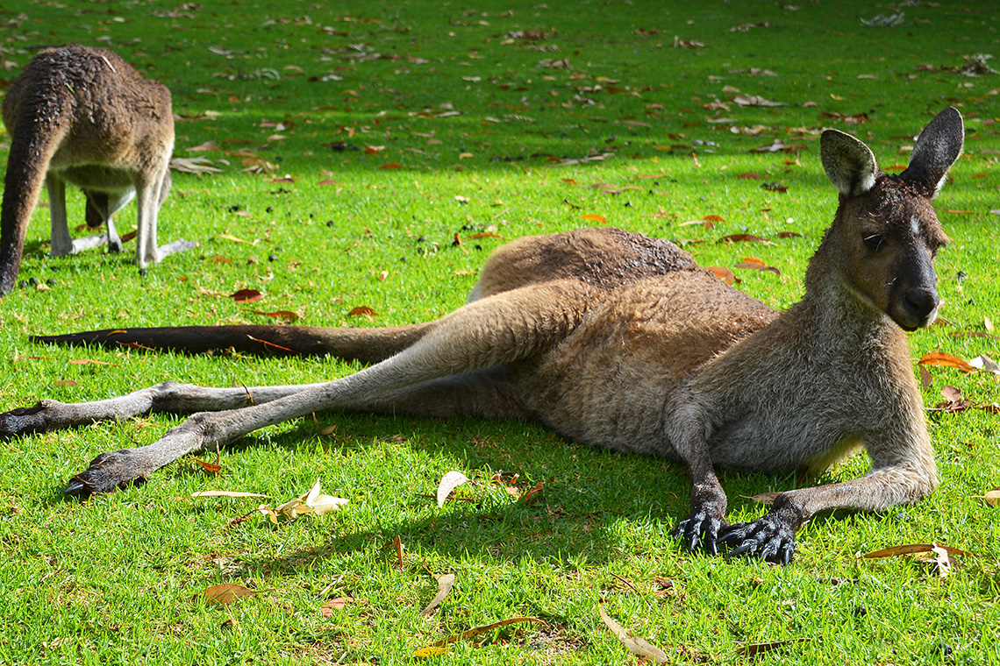
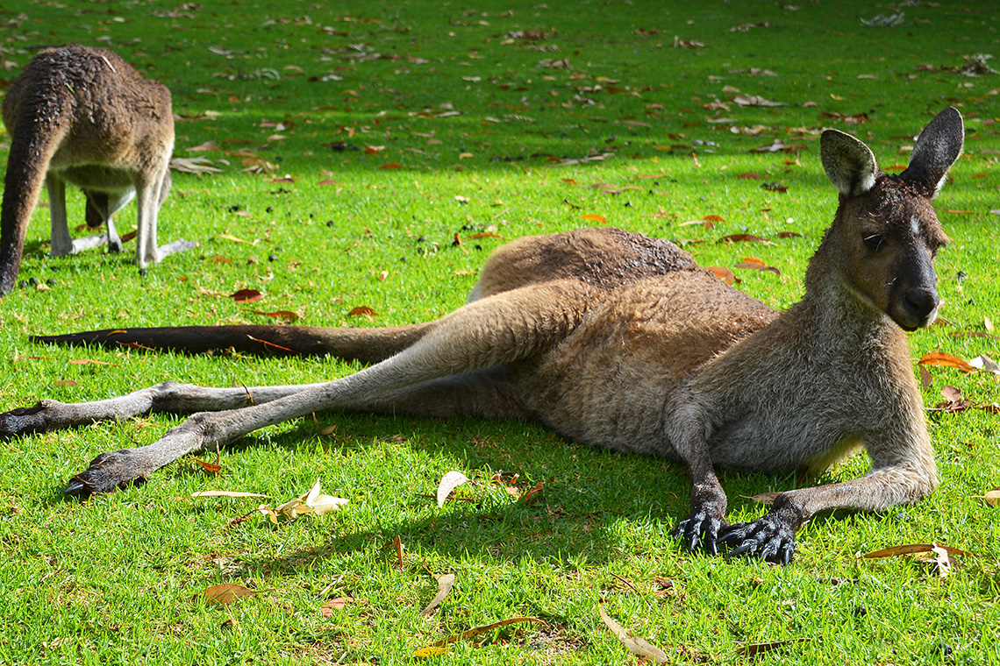

Австралия
Флора



Основная Информация
- Пустыни Австралии
Дополнительная информация
Флора Австралии отличается исключительной своеобразностью. Она восходит к мезозойской флоре Гондваны и формировалась в условиях длительной территориальной изоляции от других материков.
Узнать больше 
